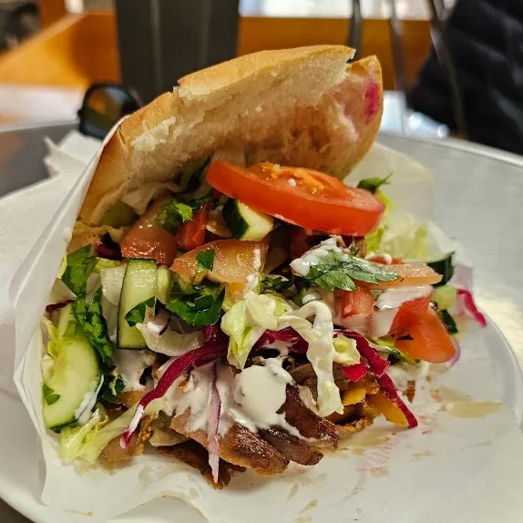

1998
L'ouverture
Hüseyin Celik ouvre le Snack du Marché, rue Pré-du-Marché, à deux pas de la place de la Riponne. La broche est montée à la main dès le premier jour : veau et agneau entiers, jamais reconstitués.

D'un comptoir de quartier à la presse romande
1998
Hüseyin Celik ouvre le Snack du Marché, rue Pré-du-Marché, à deux pas de la place de la Riponne. La broche est montée à la main dès le premier jour : veau et agneau entiers, jamais reconstitués.
2018
Le Temps parle de « haute gastronomie », 24 heures titre « Vingt ans que le Snack du Marché régale de ses broches épicées ». Le comptoir de quartier devient une adresse.

2026
Sertaç, le fils, tranche aujourd'hui la broche aux côtés de son père. Les étudiants d'hier amènent leurs enfants. Les recettes des grands-mères, elles, n'ont pas bougé.

Du veau et de l'agneau entiers, jamais de viande reconstituée. Les épices viennent de Gaziantep, la recette vient du père.


Et ce qui ne se voit pas : les épices de Gaziantep dans la viande, le sumac, la sauce piquante maison.
Sandwich, dürüm, assiette ou box : la même broche, la même famille, depuis 1998.

Yaprak döner · La broche de la maison
14.–
Roulé dans la galette, passée au grill
dès 14.–
Frites ou riz, salade, sauces
dès 20.–
Viande, frites, sauces, dans la boîte
14.–

Houmous, aubergine, feuilles de vigne
Au comptoir
Bœuf haché, persil, cumin · Piquant
14.–
Pois chiches, herbes, frit à la commande
12.–
Pistache de Gaziantep, à la pièce
1.50
Francs suisses · Service compris · Ceux du tableau noir font foi
| Format | Poulet | Veau & agneau | Köfte | Falafel |
|---|---|---|---|---|
| Sandwich | 12.– | 14.– | 14.– | 12.– |
| Petit | 9.– | 9.– | 9.– | 9.– |
| Dürüm | 14.– | 15.– | 15.– | 14.– |
| Assiette | 22.– | 22.– | 22.– | 20.– |
Une allergie, un régime, une question ? Demandez au comptoir. On cuisine tout nous-mêmes, donc on sait exactement ce qu'il y a dedans.

« Littéralement le meilleur kebab que j'ai jamais mangé. »
« Accueil chaleureux du patron et de son fils. »